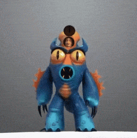

|
Hiro HamadaRobotics prodigy Hiro Hamada has the mind of a genius—and the heart of a 14-year old: his state-of-the-art battle-bots dominate the underground bot fights held in the dark corners of San Fransokyo. Fortunately, big brother Tadashi redirects Hiro's brilliance, inspiring him to put his brain to the test in a quest to gain admission to the San Fransokyo Institute of Technology. When a tragic event changes everything, Hiro turns to a robot named Baymax, and they form an unbreakable bond—and two-sixths of a band of high-tech heroes on a very important mission Voiced by Ryan Potter |

|
Tadashi Hamada Tadashi is a good guy. He just is. He actually developed, built and programmed a state-of-the-art nursebot—a Healthcare Companion named Baymax that will likely help millions worldwide. But it's his role as big brother that makes Tadashi truly special. Every kid needs a guy like Tadashi looking out for him, and Hiro knows just how lucky he is to have him in his life.
Voiced by Daniel Henney |

|
BaymaxBaymax cares. That's what he was designed to do. The plus-sized inflatable robot's job title is technically Healthcare Companion: With a simple scan, Baymax can detect vital stats, and, given a patient's level of pain, can treat nearly any ailment. Conceived and built by Tadashi Hamada, Baymax just might revolutionize the healthcare industry. But to the inventor's kid brother Hiro, the nurturing, guileless bot turns out to be more than what he was built for—he's a hero, and quite possibly Hiro's closest friend. And after some deft reprogramming that includes a rocket fist, super strength and rocket thrusters that allow him to fly, Baymax becomes one of the Big Hero 6. Voiced by Scott Adsit |

|
Professor Callaghan (Yokai)Professor Robert Callaghan heads up the robotics program at the prestigious San Fransokyo Institute of Technology and is Tadashi’s professor and mentor. When Hiro visits the university for the first time, he is star-struck by the world-renowned roboticist—while Callaghan immediately sees the potential in the 14-year-old prodigy, encouraging him to put his brain to better use.
Voiced by James Cromwell |

|
Honey LemonIt's elemental when it comes to chemistry whiz Honey Lemon. Don't let her glasses and funky fashion fool you: Honey may be as sweet as her namesake, but she has a fire in her belly and a can-do attitude that make her pretty much unstoppable. Her knowledge of alchemy proves powerful, too, when the effusive brainiac becomes part of the Big Hero 6 and creates clever concoctions that when thrown, can get her team out of nearly any jam. Voiced by Genesis Rodriguez |

|
WasabiWasabi is committed to precision. He’s super smart and just a touch neurotic, but the big and burly neatnik can’t help but join the cause when Hiro needs him most. As part of “Big Hero 6,” Wasabi amplifies his martial arts skills with jaw-dropping plasma blade weaponry. Sharp doesn’t even begin to describe this guy. Voiced by Damon Wayans Jr. |

|
Go Go TomagoAptly named Go Go Tomago knows what it takes to be fast. She's tough, athletic, and loyal to the bone, but not much of a conversationalist. Popping bubble gum and delivering well-placed sarcasm are totally her speed. The daredevil adrenaline junkie is at her best on wheels, and when Go Go joins forces with Big Hero 6, she rolls like never before, using maglev discs as wheels, shields, and throwing weapons. Voiced by Jamie Chung |
|

|
Fred FredericksonFanboy Fred comes off like a laid-back dude with no direction. But this sign-twirling, monster-loving, comic-book aficionado is sure to go places—when he's good and ready. For example, Fred doesn't hesitate to join “Big Hero 6,” and he has a lot of ideas for his superhero skillset, too. His ferocious, fire-breathing alter ego comes complete with claws, integrated communications, and a super bounce. But his sign-spinning may still come in handy. Voiced by T.J. Miller |